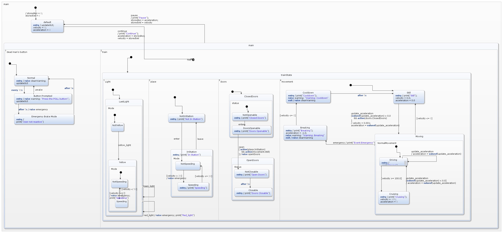

Assignment 5: Statecharts
- Rafael De Smet - 20131145
- Benoît-Philippe Fornoville - 20133299
This report shows the results of assignment 5.
Complete solution

Model
The picture above shows the complete statechart. Here we will discuss the way this model is constructed and how the requirements are handled.
-
The model starts in the default state. When we press the continue button we start the simulation and go in the main state. When we press the pause button we halt the simulation, until it is resumed again. Here it is crucial to note the use of two new variables storedAcc and storedVel. These variables hold the current acceleration and velocity of the train at any point. When we press the pause button, this remembers the state the train was in. When resuming the simulation, the train will start moving again, with the acceleration and velocity before the pause. When the pause button was pressed, some of the states of the model were active. These need to be remembered as well, so we use a deep history in the main state to ensure that all the states, the ones in inner states included, are remembered. Remark that the history is placed in the second orthogonal component of the main state and therefore ignores the states of the dead man's button.
-
The main state is divided in two orthogonal components.
-
The first orthogonal component is in charge of the dead man's button. We start with the default normal state where nothing happens. Every 30 seconds we go the next state, the Button Prompted state. This state raises the event warning and asks the driver to press the POLL button. If the driver presses this button, we go back to the normal state and start over. When the driver fails to press this button in the 5 seconds after the warning was raised, we raise the emergency event and go in to the Emergency Brake Mode. When the emergency event was raised we automatically go in the Breaking state (in orthogonal component 'movement'), where the train slows down as quickly as possible.
-
The second orthogonal component controls all the movements of the train. This component has one big state, called trainState, which in turn has four orthogonal components, all dedicated to seperate parts of the simulation.
-
The first component is responsible for handling the lights. We keep track of the lights seen by the train on the track. The default state is the only state in this component, LastLight. This state consists of two states, NotYellow and Yellow. We can move between these two when we see a yellow light on the track. When we see a green light we do nothing, as depicted by the transition from LastLight to itself on the event green_light. When we see a red light we raise an emergency and go back to the current state in LastLight. The special case is when we see a yellow light. Two things can happen now. Either the train had a velocity lower than 50km/h or it had a velocity higher than 50km/h. When the train was speeding (velocity > 50), we raise an emergency and slow down. Only when the train reaches a velocity of lower than 50km/h, it is possible to return to the NotSpeeding state. When the train was not speeding before a yellow light we do nothing.
-
The second component is responsible for handling the current place of the train. A train has two possible places to be in, either in a station or not in a station. The default state is not in a station. When we enter a station, we raise a new event called toOpenableDoors. This event is internal and indicates to the system that it is possible to open the doors of the train. This event is only raised in case of entering a station, thus ensuring that the doors won't open when not in a station. Once we are in a station we check whether the train is speeding (velocity > 20) or not. If so, we raise an emergency and slow down as quickly as possible.
-
The third component is responsible for handling the doors of the train. The default state is ClosedDoors. Only when we see the enter event raised, we allow the doors to open (not necessarily), this is the transition from NotOpenable to DoorsOpenable. Now we can raise the input event open (by pressing the button). On pressing this button, we go from state ClosedDoors.DoorsOpenable to OpenDoors.NotClosable. Remark that a guard was added that checks whether we are in a station and standing still. The OpenDoors state waits 5 seconds before allowing the doors to close again.
-
The fourth component is responsible for handling the movement of the train. The default state is Still where the train is standing still. We go in the Moving when we change the acceleration slider, which triggers the update_acceleration event. Note the guard that ensures that this can only happen when the acceleration is positive and the doors of the train are closed. We store the new velocity and acceleration. In the inner Moving state, there are two inner states, Driving and Cruising. The Driving state is the default and handles all new accelarations, by updating the velocity and accelaration. When we see that velocity is 100km/h we transition to the Cruising state, where we don't accept any positive acceleration, thus ensuring that the train doesn't go faster than 100km/h. Only when the update_acceleration event has a negative acceleration, we go back to the Driving state.
At any time the system can raise an emergency and we go from the Moving state in the Breaking state, where we slow down as quickly as possible and raise a warning, notifying that we are breaking. After the breaking is done and we reached a velocity of 0km/h, we have a 5 second cooldown (state Cooldown) before we can start moving the train again (back in state Still).